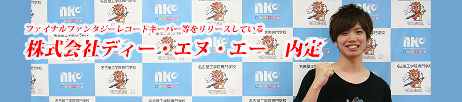
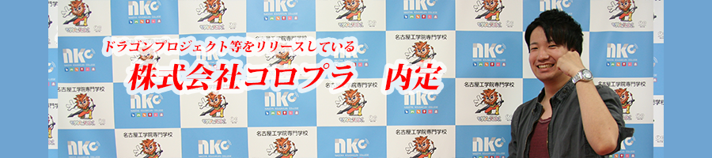
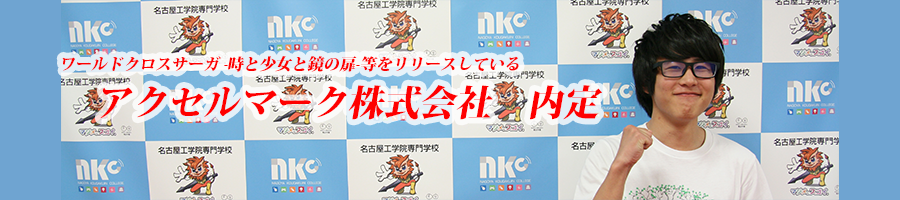

TOP
Game
CG
Enjoy
link



-->
制作アプリ一覧
カラフルチェンジ
クリッパー
御用だよ！おかっぴきさん
FOS
Tentacroom
セイボット
ころぽんず
除菌戦争
Ferock
アツ丸
ガラロボ
FACTORIAN
いそげ！！アズキちゃん
草むしり
脱獄パラソル
RoundTrip
ウサギトビ
一筆斬り
画針
リンク
GPU_RETURNSについて
日本ゲーム大賞受賞リスト
名古屋工学院専門学校
Google play
YouTube
Facebook
Twitter
Instagram
管理者ブログ
メンバーブログ
LINE@
LINEスタンプ発売中
メンバー履歴
メンバー募集について
GPU_RETURNS公式素材
プライバシーポリシー
copyright (c)
名古屋工学院専門学校
All rights reserved.